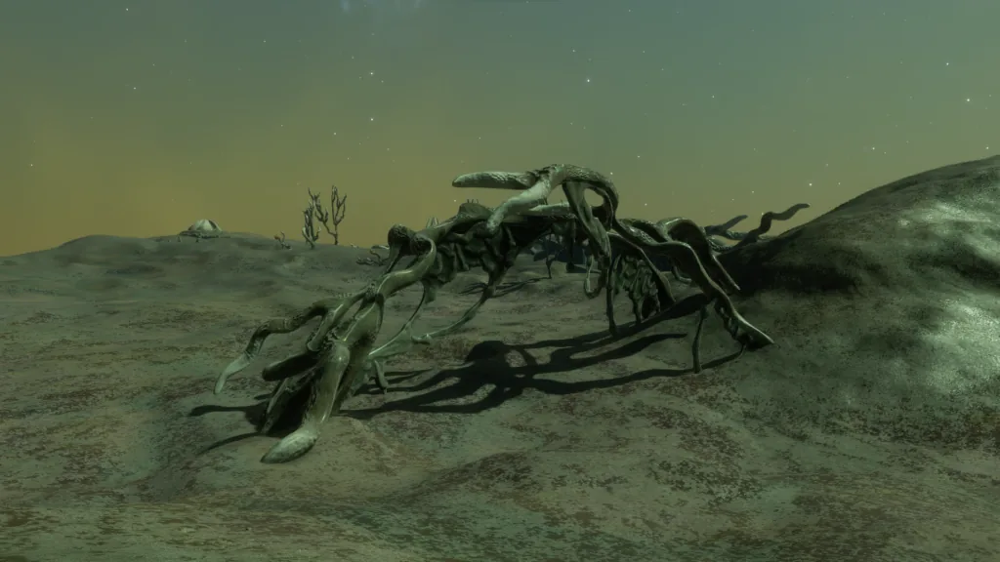
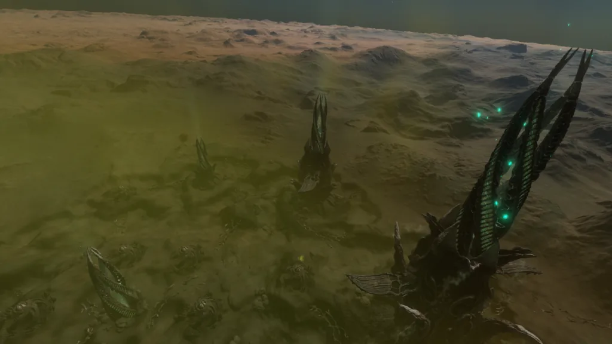
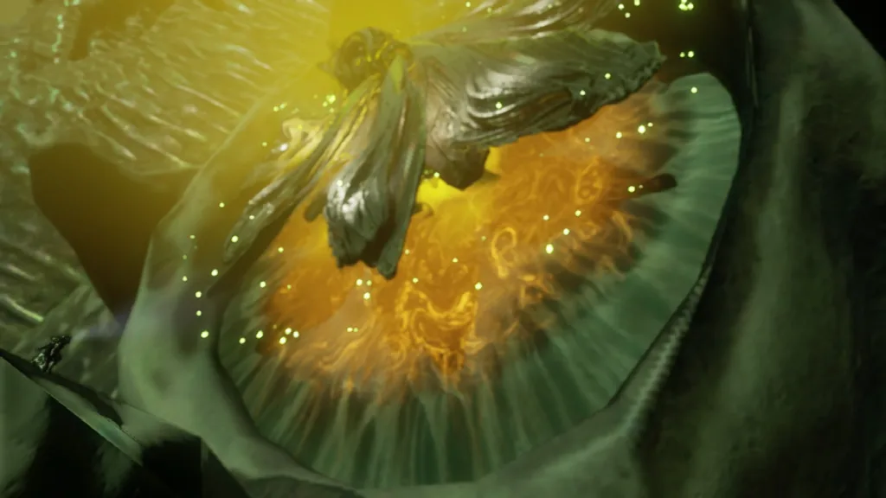
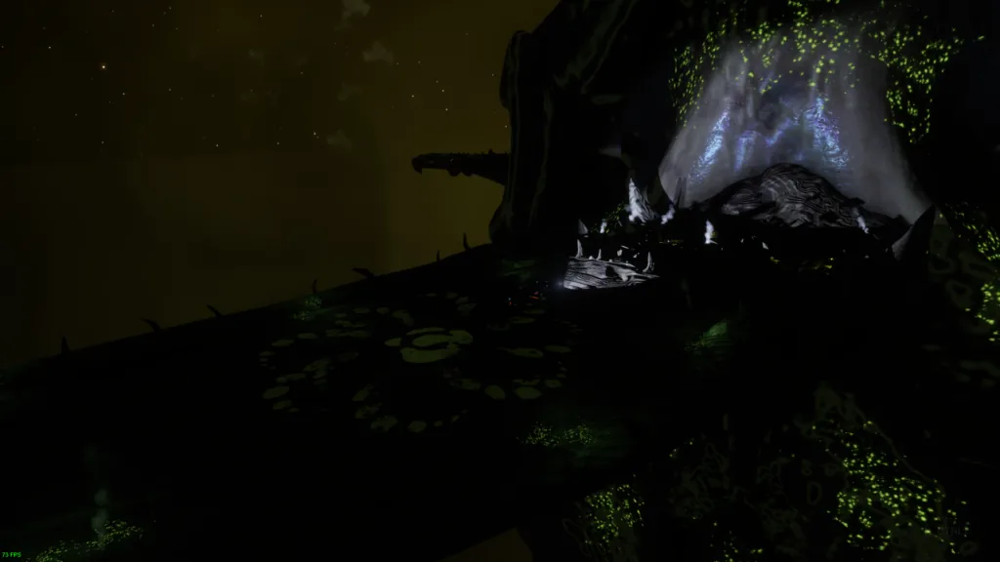
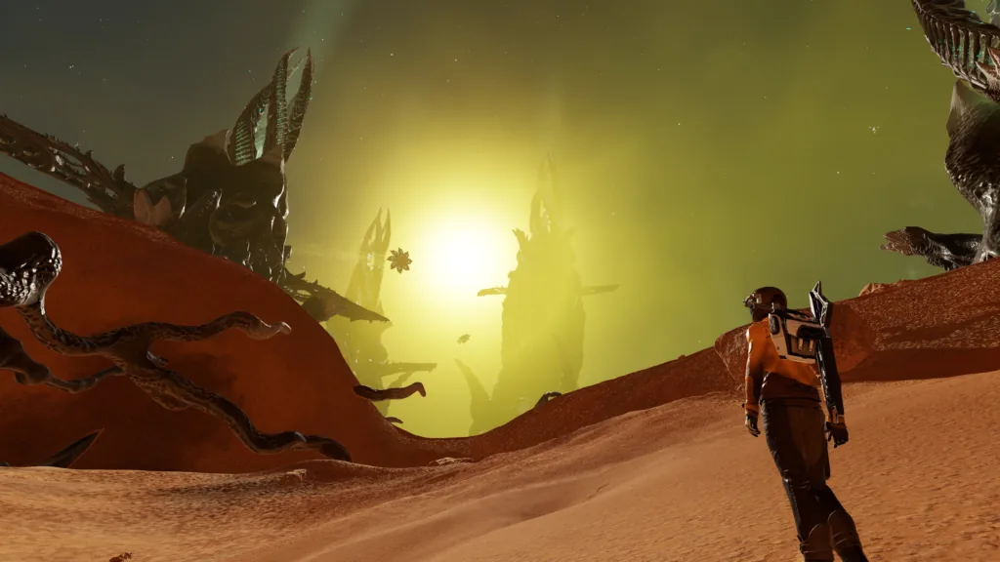
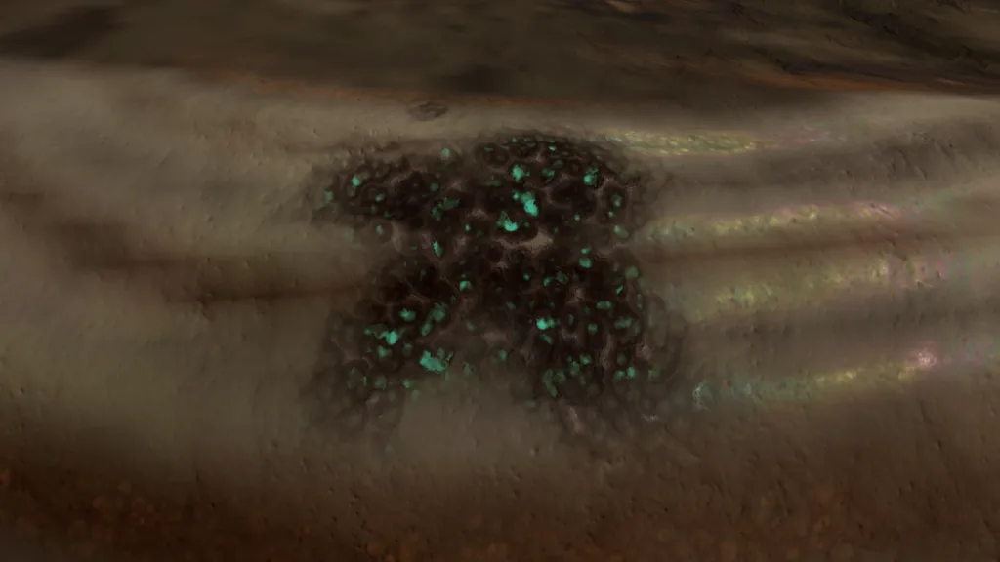
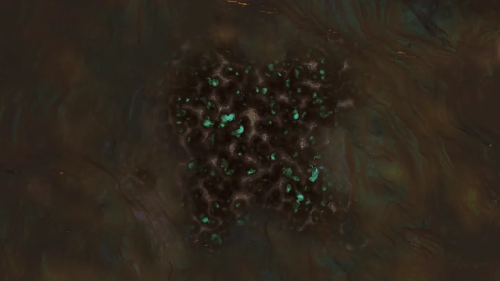
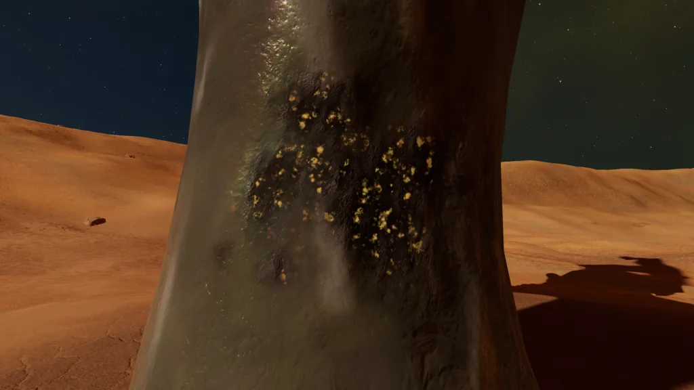
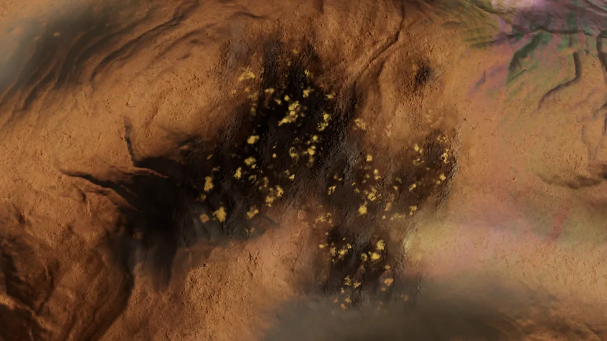

The Thargoid Barnacle Matrix was first reported to via the Canonn Alert Server August 2nd 3309 by CMDR M.V.Coehoorn. After the initial discovery a total of 45 were found clustered around the Thargoid Titans as recorded in this spreadsheet. These sites consisted of multiple objects: a Toughened Spear Root, 7 Barnacle Matrices, Coral Roots, and Coral Trees, the latter two of which dropped the corrosive commodity Coral Sap. The sites were heavily guarded by multiple Revenants and had a huge masslock factor (<=44) that decreased with distance. It was also observed that approximately every 48 seconds the roots emitted black smoke and rock particles for 8 seconds, giving the appearance of digging. Their purpose remained unknown until October 16th 3309 when they evolved into Thargoid Spires.

Seemingly overnight all the Thargoid Barnacle Matrices grew into Thargoid Spires, colossal structures almost 6 kilometers tall (5.85km measured from an SLF), passing even the diameter of the Orbis Starport and almost three times the length of a Majestic-class Interdictor. The spire sites include small Toughened Spear Crowns (formerly thought to be a type of root, but now believed to contain another spire core deeper underground), Primary Spires (believed to be the main processing plant of the site’s subterranean industry), Major Spires (believed to be a vital component in the sites operation), and smaller Spires (believed to be a core component). The sites are protected by the largest Thargoid drones seen yet, Banshees, which parallel our own Goliaths. They are capable of shooting shutdown missiles that disable ship drives. These missiles have the same visual and effect as the Maelstrom Pulse and Point Defense has been shown to not be effective against these missiles. The largest spire has four portals from which Orthrus-class interceptors enter and emerge while occasionally Cyclops-class interceptors will jump in.


The large size of spires allows ships to land on them on large open petals on the side. These petals were found to have markings that link them to the Titan they are associated with. Leaving your ship on this landing site, you will find platforms that lead down to a central platform that contains a hybrid compound bin. There are 4 bins on the Primary spire, 2 bins on the Major spire, and 2 bins on the Minor spire. Around these bins and platforms are four nerve clusters. Overloading these nerve clusters with the Energylink tool, available with any suit, opens the device (though the nerve clusters are on a 1-minute cooldown until the device is opened so move fast) which contains a Spire Refinery Compound. The use of this compound is currently unknown but the Pilots Federation has authorized the sale and purchase of the Spire Refinery Compound and Contaminated Spire Refinery Compound from PF Carrier bartenders. The process is shown below.

At the nearby Mega Barnacles, you can find nerve clusters on the “legs” of the Mega Barnacle, using the Overload Mode of the Energylink tool on the nerve clusters will make the corresponding “Bulbous Hanging Sac” located on the central pillar of the Mega Barnacle vulnerable to weapons fire. Shooting the Bulbous Hanging Sac will release a Semi-Refined Spire Mineral commodity that can be collected with a SRV. In addition, the hanging “Protruding Sacs” can be shot with weapons to release an Impure Spire Mineral. Be warned that destroying the nerve cluster at the Mega Barnacle can cause nearby Revenants to attack. Both commodities are corrosive. Something of note, the Mega Barnacles appear to be breathing, seen in the video below. Though less dominant than before the appearance of the spires, both Coral Roots and Coral Trees have spread throughout the sites, and Coral Sap can still be collected by shooting the “Organic Material” from the Roots/Trees.

The image below shows two of the new materials. On the left is the Impure Spire Mineral which drops from the hanging “Protruding Sacs”. On the right is the Semi-Refined Spire Mineral. When the Semi-Refined Spire Mineral drops from its container on the central pillar of the Mega Barnacle, it will appear as shown in the right of this picture. When it’s picked up by SRV/ship and subsequently dropped, it will visually transform and turn into the model of the Impure Spire Mineral shown on the left. (currently believed to be a bug).
The image below shows the Spire Refinery Compound, found in the “bins” on the Spires.
Professor Palin, an engineer based in the Arque system, requested all 4 items (Spire Refinery Compound, Semi-Refined Spire Mineral, Impure Mineral, and Coral Sap) to be delivered to his Abel Laboratory or Baird Gateway for study. Note that at the time of writing, some commanders that deliver one of these commodities to Palin may receive a bugged and empty message from him. It’s highly believed to be a localization issue, as this has only happened with a language different than English.
Additionally at the Spire sites there are Xeno-biology “patches”, which the Genetic Sampler can be used on to snag samples of Thargoid Spires, Thargoid Mega Barnacles, Coral Trees, and Coral Roots. Each sample can be turned in for roughly 2m credits as shown below along with images of where the samples can be obtained. At the time of the spires’ appearance, all commanders would get First Discovered bonuses when turning in these exobiology samples, quintupling the payout. This appears to have since been changed, making the original behavior an unintentional benefit.
| Thargoid Spires | 2,247,100 Cr |
| Thargoid Mega Barnacles | 2,313,500 Cr |
| Coral Tree | 1,896,800 Cr |
| Coral Root | 1,924,600 Cr |




The purpose of the Thargoid Spire sites are currently unknown but their large size and associated with the Titans, which have been considered an analog for stations, have led to the conclusion that these are the equivalent of surface bases. The association with barnacles suggests some type of industrial center given that barnacles take planetary resources and turn them into meta-alloys. The question remains, what are the spires making?
Header Image Courtesy of CMDR Gadnok. Article text credited to the Thargoid Lab in the Canonn Discord Server as it was a joint effort by mean dedicated Canoneers.